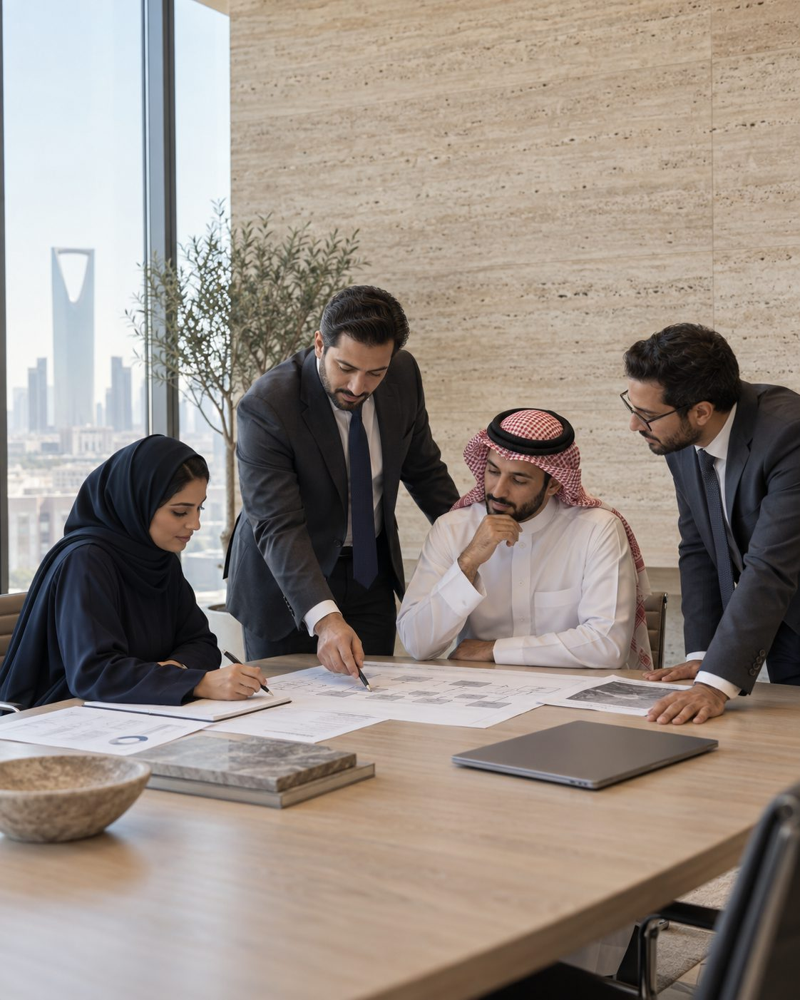
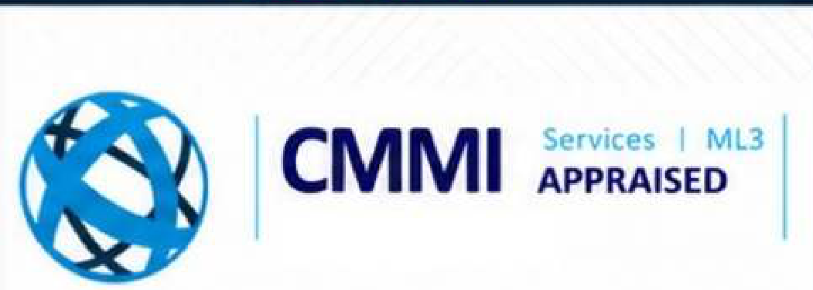
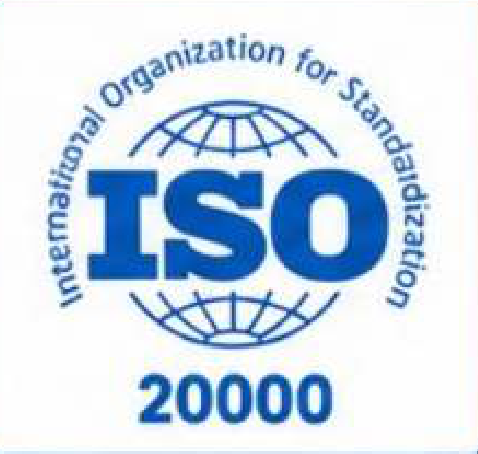
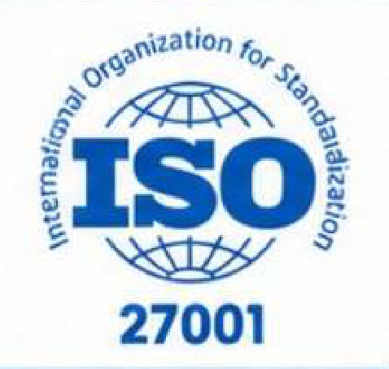
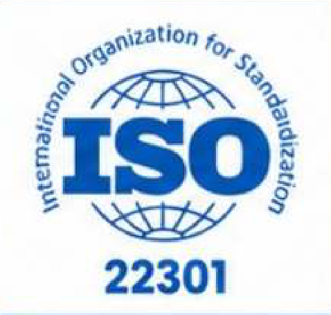
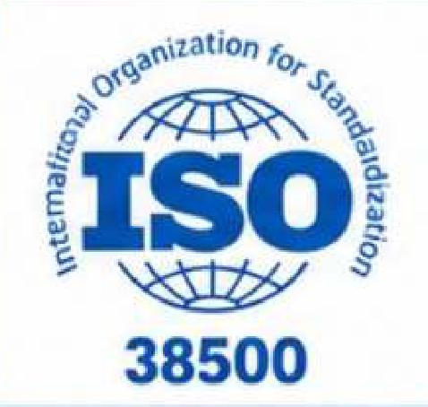
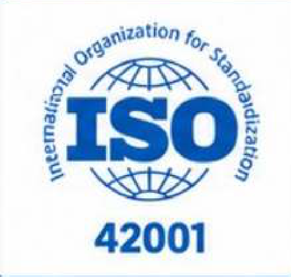

About Global GES
Enterprise expertise. From consultation to operation.
A trusted partner for enterprise IT consultation, digital transformation, cybersecurity governance and managed technology infrastructure.
People × Processes × Technology

Who we are
One partner. A connected perspective.

Global Experts Services is an IT services and consultation firm serving government entities, enterprise corporations and global institutions.
We combine deep industry experience with a client-focused operating framework to deliver technology solutions shaped around each organisation's priorities. Our work spans defence, government, banking, telecommunications and healthcare.
With more than fourteen years of project execution, GES connects consultation with implementation, integration, handover and ongoing support. Ten specialised service practices bring software, cloud, infrastructure, cybersecurity, data and operations together.
- 14+years of operational and consulting experience
- 10specialised technology and engineering practices
- 24/7technical support and managed operations
Our philosophy
Technology is not the whole answer.
Sustainable transformation depends on people, processes and technology working together. Each is essential. None works in isolation.
People× Processes× Technology
01 · People
Build the capability to move forward.
Clear responsibilities, stakeholder involvement and practical training help teams understand the change and take ownership of it.
02 · Processes
Give the work a reliable structure.
Governance, service management and consistent delivery practices connect individual activities to organisational priorities.
03 · Technology
Make the foundation fit the purpose.
Architecture, platforms and infrastructure should support how an organisation works, integrates, protects its information and evolves.
Mission, vision and values
Client success. Long-term value.
-
Mission
We deliver tailored IT consultation and managed solutions that improve operational efficiency, mitigate risks and help organisations gain more value from technology investments.
-
Vision
To be the trusted regional partner for technology-enabled transformation, aligning people, processes and technology to build resilient, intelligent and future-ready organisations.
-
Values and strategic priorities
01
Client success & value creation
Shape technology and managed services around the client's operating needs, risks and investment priorities.
02
Technology leadership & innovation
Invest in research, emerging technology frameworks and international standards, including AI, cloud, Zero Trust and IoT.
03
Trusted long-term partnership
Work as an extension of our clients' internal teams through transparency, accountability and ethical governance.
04
Operational resilience & continuity
Design, secure and support mission-critical environments that sustain performance and adapt as client needs evolve.
Our approach
A continuous journey. From understanding to operation.
Every engagement has a different starting point. The delivery path connects assessment, planning and execution with the support needed afterwards. Six stages, each with a question it has to answer before the next begins.
01
Where are we, honestly?
Assess
Review the current environment, business requirements, risks and opportunities for improvement. GES starts with the environment as it is, not as the last vendor described it.
02
Where should we be going, and why?
Strategise
Align technology priorities with business objectives and define the roadmap for change, with the people and process changes named alongside the technology ones.
03
What exactly will be built, by whom?
Design
Develop the architecture, processes and implementation plans that turn direction into a workable solution, with ownership assigned before anything is procured.
04
Is it working in the client's environment?
Implement
Coordinate delivery, integration and project activities around the agreed scope and requirements, with handover planned from the first week.
05
Who keeps it running tomorrow?
Operate
Provide the operational support, maintenance and monitoring relevant to the engagement, on site or from the GES 24/7 support centre.
06
What has changed since we started?
Optimise
Review performance and changing needs to identify where the environment can be refined, so the programme keeps paying back after go-live.
Certified professional expertise
Certified specialists. Hands-on delivery experience.
GES combines recognised professional certifications with delivery experience across project leadership, governance, architecture, cybersecurity, service management, infrastructure, process improvement and data management.
- Lead & governPMP · PgMP · PRINCE2 · COBIT 2019 · TOGAF
- Secure & assureCISSP · CISA · CISM · CEH · ISO/IEC 27001 Lead Implementer
- Deliver & operateITIL Managing Professional · ISO/IEC 20000 Lead Implementer · MCSE · CCIE · CompTIA A+
- Improve & manage dataLean Six Sigma Black Belt · CDMP Master · PSM III · GAQM
Organisational credentials
Defined processes. Auditable controls.
GES maintains organisational credentials across service management, information security, business continuity, IT governance, responsible AI management and process maturity.






- CMMI ServicesMaturity Level 3
- ISO/IEC 20000-1IT service management
- ISO/IEC 27001Information security
- ISO 22301Business continuity
- ISO/IEC 38500IT governance
- ISO/IEC 42001AI management systems
Frameworks & standards
Established methods. Applied to your environment.
- ITIL 4Service management
- COBIT 2019Governance
- PMI PMBOK / PRINCE2Project delivery
- Agile / Scrum / SAFeAgile delivery
- DevOps / SREEngineering operations
- TOGAFEnterprise architecture
- CMMIProcess maturity
- Lean Six SigmaContinuous improvement
Regional presence
Global reach. Regional expertise.
Regional hubs connect GES clients with certified specialists across cybersecurity, cloud, networking, data, infrastructure and enterprise systems, in the client's working day.
- LondonUnited Kingdom
- TürkiyeRegional hub
- Saudi ArabiaRiyadh · head office
- BahrainRegional hub
- UAEUnited Arab Emirates
The next conversation
Bring your priorities. Let's shape the path.
Tell us about the business challenge, the technology environment or the change you are planning.